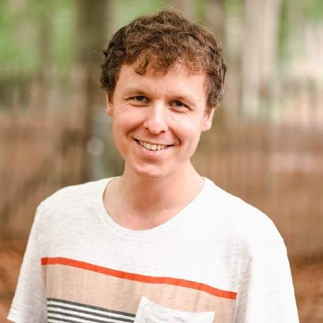

<div class="nav">
  <h2></h2>
  <div class="menu">
    <p>About us</p>
    <p>Our Mission</p>
    <p>Contact us</p>
  </div>
</div>

<div class="hero">
  <div class="hero-text">
    
    <h1>Hello.</h1>
    <p>I'm Quentin.</p>
    <div class="buttons">
      <a class="button primary" href="https://github.com/Toofi" target="_blank">Github</a>
      <a class="button secondary" href="https://twitter.com/juxtopposed" target="_blank">Stay Tuned</a>
    </div>
    
  </div>
  <div class="blob-cont">
    <div class="yellow blob"></div>
    <div class="red blob"></div>
    <div class="green blob"></div>
  </div>
</div>


<svg>
  <filter id='noiseFilter'>
    <feTurbulence 
      type='fractalNoise' 
      baseFrequency='0.6' 
      stitchTiles='stitch'/>
     <feColorMatrix in="colorNoise" type="matrix" values="1 0 0 0 0 0 1 0 0 0 0 0 1 0 0 0 0 0 1 0" />
        <feComposite operator="in" in2="SourceGraphic" result="monoNoise"/>
        <feBlend in="SourceGraphic" in2="monoNoise" mode="screen" />
  </filter>
  
</svg>


<!-- Not required -->
<a href="https://www.youtube.com/watch?v=_ZFghigBmqo" target="_blank" class="youtube">Watch on YouTube</a>
